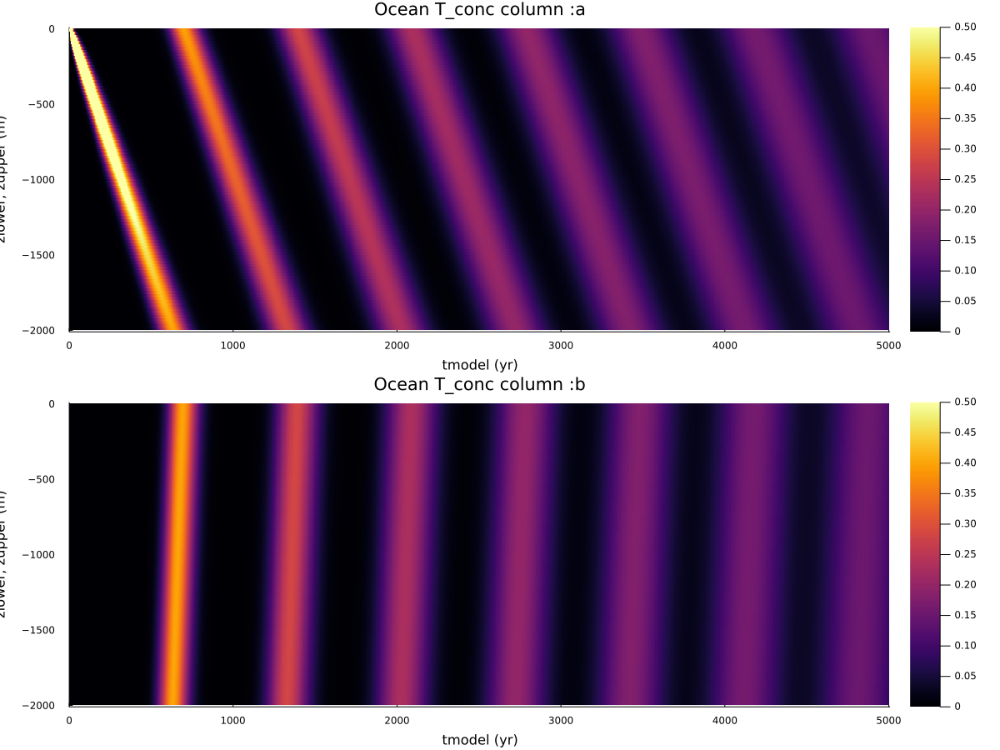

Transport examples
PALEOocean/examples/transport_examples contains two examples showing the construction of (ocean) transport matrices, using PALEOocean.Ocean.add_loop! to construct a transport matrix by adding circulation around closed loops.
Advection
julia> include("PALEO_examples_transport_advect.jl")This uses TransportExamples.ReactionTransportAdvectExample defined in TransportExamples.jl to construct a transport matrix with a closed loop circulation down the first column and up the second column of a column-based model.

Figure 1
Closed loop circulation down col :a and up column :b resulting in advection of a tracer T down column :a and up column b:. Area of :a is 10x that of :b, hence the advection velocity in :b is 10x that in :a. NB: advection using CVODE, an implicit stiff ODE integrator, is quite diffusive
Diffusion
julia> include("PALEO_examples_transport_diffuse.jl")This uses TransportExamples.ReactionTransportDiffuseExample defined in TransportExamples.jl to construct a transport matrix with constant vertical diffusivity Kz.
Figure 2
Constant diffusivity Kz columns :a and :b. Cell thickness in :b is 10x that of :a
Additional Reactions
Main.TransportExamples.ReactionTransportAdvectExample — TypeReactionTransportAdvectExampleAdvection around two columns
Parameters
T[Float64]=2.0e7 (m^3 s^-1),default_value=2.0e7,description="advective flux"
Main.TransportExamples.ReactionTransportDiffuseExample — TypeReactionTransportDiffuseExampleEddy diffusion N columns
Parameters
Kz[Float64]=1.0e-5 (m^2 s^-1),default_value=1.0e-5,description="eddy diffusivity"